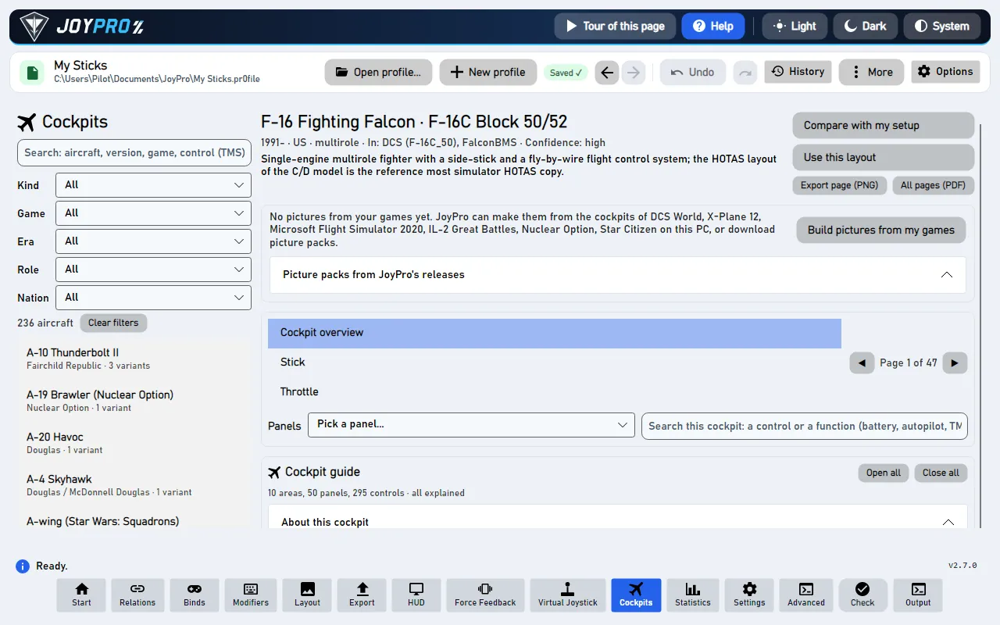

#Glan scagairí
CnaipescríofaFolmhaíonn sé an bosca cuardaigh agus cuireann sé Cineál, Cluiche, Ré, Ról agus Náisiún ar ais go "Gach": taispeántar liosta iomlán na n-aerárthach arís.
Is tagairt é an leathanach Cabáin do chábáin phíolóta fíora agus fhicseanúla, leagtha amach cosúil le caibidil chábán píolóta i lámhleabhar eitilte: roghnaigh aerárthach, a leagan agus a shuíochán, agus léigh an forbhreathnú, leathanach do gach greim (maide, sconna, cioglach, comhchoiteann) leis an tábla HOTAS, agus leathanach do gach painéal. Ní athraíonn sé aon rud i do phróifíl ná i do chluichí; cabhraíonn sé leat cinneadh a dhéanamh cén fheidhm a théann ar cén cnaipe, agus osclaíonn Úsáid an leagan amach seo an draoi socraithe le leagan amach maide agus sconna aerárthaigh.


Líníocht den ghreim le lipéid uimhrithe agus an tábla HOTAS: sraith amháin do gach rialú agus treo (brú, brú fada, coinneáil), colún amháin do gach mód (NAV, A-A, A-G; nó TGP, HUD). Seo mar a úsáideann an fíoraerárthach gach cnaipe, eiseamláir mhaith do do cheangail féin.


Nuair atá an t-aerárthach i do chluichí suiteáilte, tarraingíonn Déan pictiúir ó mo chluichí cábán píolóta an chluiche le gach rialú inchliceáilte uimhrithe agus ainmnithe mar a ainmníonn an cluiche é. D'aerárthaí nach leatsa, tairgeann JoyPro pacáistí pictiúr le híoslódáil, agus do chábáin nach bhfuil i gcluiche ar bith, grianghraif fhíoraithe le lipéid JoyPro orthu.
Ní scríobhtar aon rud isteach i gcluiche. Marcálann Déan comparáid le mo shocrú sna táblaí HOTAS na feidhmeanna a cheanglaíonn do phróifíl oscailte cheana don chluiche agus don aerárthach sin, ionas go bhfeiceann tú d'aon amharc cad atá in easnamh fós.
Documents\JoyPro2\Cockpits; osclaíonn Oscail fillteán é.Nuair a osclaíonn tú leagan, taispeánann JoyPro an chéad cheann díobh seo atá ann:
Limistéar (consól clé, príomhphainéal, os cionn) > painéal ("ENG & JET START control panel") > rialú (gach lasc, cnaipe agus cnag lena shuímh). Osclaíonn cliceáil ar rialú an leathanach a thaispeánann é agus cuireann sé fáinne timpeall a lipéid; roghnaíonn cliceáil ar lipéad é sa treoir. Osclaíonn nó dúnann Oscail gach ceann / Dún gach ceann gach limistéar.
CockpitsViewModel.cs (roghnóir, scagairí, comparáid, úsáid leagan amach), CockpitsViewModel.Pages.cs (leathanaigh an lámhleabhair, easpórtáil), CockpitsViewModel.Guide.cs, CockpitsViewModel.Pictures.cs, CockpitsViewModel.PicturePacks.cs, CockpitsViewModel.VerifiedPhotos.cs; amharc an leathanaigh ManualPageView.DB\Cockpits\*.json (aerárthaigh, leaganacha, rialuithe, painéil), DB\Cockpits\drawings, line-drawings, guide, photo-labels (comhad amháin in aghaidh grianghraif fhíoraithe).<data>\GameData\CockpitPictures\<game>\<aircraft> (pictures.json, index.json), grianghraif fhíoraithe in <data>\CockpitPhotos\<aircraft>, grianghraif nasctha sa taisce íoslódála; na freagraí faoi ghrianghraif le freagraí grianghraf na bhfeistí (cockpit:<aircraft>).engine cockpits (list, search, get --json do Úsáid an leagan amach seo, compare do Déan comparáid le mo shocrú, render do PNG/PDF, pictures build|status|check, photos). Tagairt: cockpits, privacy.An doiciméadú gné taobh thiar den leathanach seo, ginte ón stór:
26 rialú, léite ó fhoinse an chláir: 26 scríofa, 0 leis na fíricí ón bhfoinse (leid uirlise, nóta tráchta sa chód, glao innill), 0 fós le leathnú.
Folmhaíonn sé an bosca cuardaigh agus cuireann sé Cineál, Cluiche, Ré, Ról agus Náisiún ar ais go "Gach": taispeántar liosta iomlán na n-aerárthach arís.
Leid uirlise Marcálann gach feidhm a bhfuil gaol ag do phróifíl oscailte di (sna cluichí agus aerárthaigh den leagan seo)
Cuireann sé do phróifíl oscailte i gcomparáid leis an leagan seo: faigheann gach feidhm sna táblaí HOTAS atá ag ceann de do ghaolta dá chluichí agus dá aerárthaigh ✓ leis an ngaol agus an t-ionchur, agus insíonn líne cé mhéad feidhm atá clúdaithe.
Léann sé amháin; teastaíonn próifíl oscailte.
Leid uirlise Tugann leagan amach maide agus sconna an aerárthaigh seo don draoi socraithe (engine cockpits get ... --json)
Osclaíonn sé an draoi socraithe leis an leagan seo: téann a aerárthach go barr liosta na dtosaíochtaí agus cuireann an plean a fheidhmeanna mar atá siad ar mhaide agus sconna an leagain seo, in ionad chéad leagan an aerárthaigh.
Glacann draoi a d'fhág tú oscailte roimh Cuir i bhfeidhm leis freisin.
Leid uirlise An leathanach seo mar phictiúr i do stíl líníochta (Socruithe > Líníochtaí)
Sábhálann sé an leathanach a thaispeántar mar PNG i do stíl líníochta i Documents\JoyPro2\Cockpits, ainmnithe as an aerárthach, an leagan agus an leathanach; cuirtear comhad nua in ionad comhaid leis an ainm céanna.
Osclaíonn Oscail fillteán é.
Leid uirlise Gach leathanach den leagan seo mar PDF amháin
Sábhálann sé gach leathanach den leagan seo mar PDF amháin i do stíl líníochta i Documents\JoyPro2\Cockpits.
Osclaíonn Oscail fillteán é.
Leid uirlise Déanann sé cábáin do chluichí suiteáilte ({0}) a rindreáil agus gach rialtán inchliceáilte uimhrithe agus ainmnithe mar a ainmníonn an cluiche é. Déanta ar an ríomhaire seo, coinnithe le do shonraí cluiche.
Rindreálann sé cábáin do chluichí suiteáilte ar an ríomhaire seo, gach rialtán inchliceáilte uimhrithe agus ainmnithe mar a ainmníonn an cluiche é.
Tógann sé cúpla nóiméad in aghaidh an chluiche; coinnítear na pictiúir le do shonraí cluiche, riamh i bhfillteán cluiche, agus úsáideann leathanaigh an lámhleabhair iad.
Leid uirlise Íoslódálann sé na pictiúir cábáin a rindreáil JoyPro as an gcluiche (sócmhainn eisiúna ar GitHub), seiceálann iad agus coinníonn iad le do shonraí cluiche
Íoslódálann sé an pacáiste pictiúr tairgthe ó eisiúintí JoyPro le barra dul chun cinn.
Seiceáiltear gach pacáiste i gcoinne a shuim sheiceála agus díphacáiltear é i do shonraí cluiche; taispeánann leathanaigh lámhleabhair na n-aerárthach sin pictiúir an chluiche ansin.
Dúnann sé an tairiscint gan íoslódáil; ní thairgeann JoyPro na pacáistí seo arís sa seisiún seo.
Stopann sé an íoslódáil pacáiste pictiúr atá ar siúl.
Ní shuiteáiltear pacáiste nach raibh críochnaithe; fanann pacáistí atá críochnaithe cheana.
Leid uirlise Pacáistí gach aerárthaigh i do chluichí suiteáilte a bhfuil aithne ag JoyPro orthu; feiceann tú an méid iomlán ar dtús
Lorgaíonn sé pacáistí pictiúr gach aerárthaigh de do chluichí suiteáilte atá ar eolas ag JoyPro agus tairgeann sé na cinn nach bhfuil ar an ríomhaire seo fós lena méid iomlán; tosaíonn Íoslódáil é.
Íoslódálann sé gach pacáiste pictiúr den chluiche seo ó eisiúintí JoyPro.
Seiceáiltear gach pacáiste i gcoinne a shuim sheiceála agus díphacáiltear é i do shonraí cluiche; taispeánann leathanaigh lámhleabhair na n-aerárthach sin pictiúir an chluiche ansin.
Leid uirlise Íoslódálann sé gach grianghraf den chábán seo óna sheoladh bunaidh (nó ó chóip na cartlainne gréasáin), seiceálann sé é in aghaidh thaifead JoyPro agus coinníonn sé ar an ríomhaire seo é
Íoslódálann sé gach grianghraf fíoraithe den chábán seo óna sheoladh bunaidh, seiceálann sé gach ceann i gcoinne thaifead JoyPro agus coinníonn sé ar an ríomhaire seo é.
Áirítear an cliceáil freisin mar do "tá" do ghrianghraif an aerárthaigh seo; bíonn leathanach in aghaidh an ghrianghraif sa lámhleabhar ansin le lipéid uimhrithe JoyPro.
Stopann sé íoslódáil ghrianghraif fhíoraithe an chábáin seo.
Fanann grianghraif atá íoslódáilte agus seiceáilte cheana ar an ríomhaire seo.
Osclaíonn sé in Explorer an fillteán a ndeachaigh na heaspórtálacha PNG agus PDF ann, agus cruthaíonn sé é más gá.
Folaíonn sé marcanna Déan comparáid le mo shocrú: taispeánann na táblaí HOTAS agus an treoir an cábán gan do cheangail arís.
Leid uirlise An leathanach roimhe
Téann sé chuig an leathanach roimhe den lámhleabhar.
Leid uirlise An chéad leathanach eile
Téann sé chuig an gcéad leathanach eile den lámhleabhar.
Leid uirlise Osclaíonn gach limistéar agus painéal
Osclaíonn sé gach limistéar agus painéal de threoir an chábáin, ionas go liostaítear gach rialtán.
Leid uirlise Taispeánann na limistéir amháin
Dúnann sé gach limistéar de threoir an chábáin: ní liostaítear ach na limistéir; oscail ceann chun a phainéil a fheiceáil.
Osclaíonn nó dúnann sé an limistéar nó an painéal seo de threoir an chábáin.
Fad a scagann cuardach an treoir, glanann an cliceáil an scagaire.
Osclaíonn nó dúnann sé míniú an rialtáin seo i dtreoir an chábáin: cad a dhéanann sé i bhfocail shimplí, "Sa chomhthéacs níos leithne", a shuímh, ainm an chluiche air agus na horduithe lena cheangal.
Freagraíonn sé ceist ghrianghraf an aerárthaigh seo: lódálann Tá a naisc ghrianghraf anois, ní lódálann Níl, lódálann I gcónaí do chabáin grianghraif gach aerárthaigh gan fiafraí, stopann Choíche gach grianghraf cábáin.
Is ionann Taispeáin grianghraif an aerárthaigh seo tar éis Níl agus Tá.
Lódálann sé an grianghraf seo arís nuair nárbh fhéidir é a lódáil.
Leid uirlise Osclaíonn sé an grianghraf féin i do bhrabhsálaí (lánmhéid, chun é a shábháil as sin)
Osclaíonn sé an grianghraf féin i do bhrabhsálaí i lánmhéid, chun féachaint air nó é a shábháil as sin.
Osclaíonn sé i do bhrabhsálaí an leathanach ar a bhfuil an grianghraf foilsithe.
Osclaíonn sé an fhoinse seo i do bhrabhsálaí; is é an seoladh an leid uirlise.